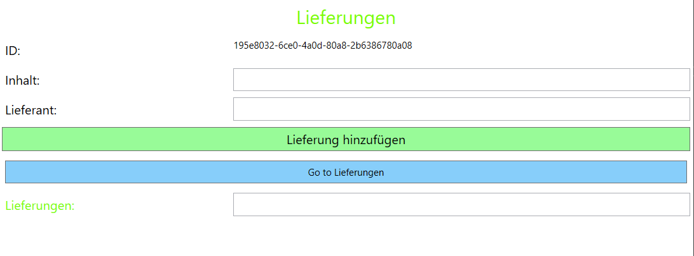

Wir haben in APR selbstständig ein Projekt erstellt. Dieses wird beim Start auf einer Wpf-Oberfläche angezeigt. Bei meinem Projekt werden der Inhalt von Lieferungen und der Lieferantenname angegeben. Zudem wird noch selbstständig eine ID hinzugefügt. Auf der nächsten Seite und am Ende der Seite werden die schon gespeicherten Lieferungen angezeigt.
